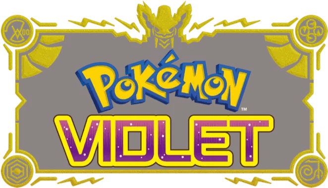

Pokemon Violet

| Release Date: | November 18th, 2022 |
| Genre: | RPG |
| Developer: | Game Freak |
| Platform: | Nintendo Switch |
| Details: | Bulbapedia |
Pokemon Violet is the 9th generation of the mainline Pokemon games, alongside Pokemon Scarlet. These games take the open-world concept attempted in Pokemon Sword/Shield's wild area and use that formula as the basis for this game. It's the first Pokemon game that's an open-world experience, with various objectives to complete as you explore the Paldea region.
The premise of this game is similar to any other Pokemon game. You've recently have moved to the Paldea region, and your mom has enrolled you in the region's academy. Each year, the academy hosts a school-wide event called The Treasure Hunt, where students explore the Paldea region to look for their own personal treasure. We can then choose wherever we'd like to go in the region, to either challenge Gym Leaders, dismantle Team Star, or hunt down the Titan Pokemon!
Gameplay
The main gameplay of Pokemon Violet is like the other games in the mainline series, where you travel around the region collecting various different kinds of Pokemon. You can use these Pokemon on your team to challenge other wild Pokemon or other Pokemon Trainers in a turn-based battle. The near limitless number of combinations of Pokemon that can be present on your team makes each playthrough feel unique, but that's true for any Pokemon game.
For Pokemon Violet, this formula remains pretty much the same. The key difference here is your not bound by the typical routes that previous games had. Once you get through the tutorial area of the game, the entire region opens up to you to explore. This makes the adventure feel more like your own adventure, where you can choose your own path rather than taking the same route as everyone else who plays the game. While the core gameplay loop is the same, how you explore the world is now your choice as well. They also expanded the union circle feature they've had in the past to allow up to 3 people join your "instance" and explore the region together. This is probably my favorite feature of any Pokemon game so far, as I was able to experience the entirety of this game with my girlfriend. We'd be out doing our own thing, then one of us would find a rare Pokemon, and the other could come join and catch one too, completely seamlessly. So not only can you explore the world however you want, but it can be alongside your friends too!
However, that doesn't come with it's own limitations. There's still some areas that are locked behind progression through the story, like gaining the ability to swim across water, but that's typical. What is a bummer though, is that there's still a particular order in which you need to progress through the story. For the gym challenge for example, while you can go challenge the further gym away first, it doesn't become your first gym. They'll still have Pokemon way higher level than your own, rather than using a team of Pokemon that corresponds with how many gym badges you have. This is where the whole "choose your own path" idea really breaks down, as yeah you could train to the point where you can beat the far away gym, now all the other gyms will be trivial since you're overleveled. It's really a missed opportunity that I think hinders the experience they were going for by a lot.
Story/Worldbuilding
Modern Pokemon games aren't really known for their story, but Violet's story is rather good by those standards. It's not anything incredible, but for a Pokemon game it's enjoyable. Some of the characters you meet during your adventure have actual backstories and motivations behind their actions. Not all the characters are like this, either one-dimensional or nothing more than a title, but some good characters is a welcome change.
The overall story is kind of there? You have three main quests to follow, each of which with a different NPC guiding you through it. There's not much overlap between them, so removing one would have no affect on the others. After finishing the three stories, the NPCs from each one get together for one last story bit, which gets absolutely wild if you go in without knowing anything about it. So for majority of the game the story feels about the same as other Pokemon games, just with some more interesting characters. The ending feels rather disconnected from the rest, but it gave such a sense of awe that I really enjoyed it.
However, with any Pokemon game, when they excel at one thing, they take away from another... While the world is this grand area to explore, it just feels, empty. For the wilderness areas of the region, that makes sense, the wilderness is supposed to feel empty. It's mainly the cities and towns feel empty or out of place. In all of the cities in Paldea, the only ones you can enter are the school, sandwich shops, gym challenge buildings, and stores. Stores barely could since upon entering them they just load up a menu, there's no true "inside". While it's a minor thing, it makes the towns feel less complete, where some of the could really use it. Take Medali for example, this town is composed of various skyscrapers, the normal-type gym challenge restaurant, and two outdoor Pokemon centers, in the middle of a flat plains. The skyscrapers look so out of place in the middle of the field, that it looks like they just took a generic city and pasted it there. Cities don't just go from wilderness to skyscrapers, since the only reason to build a skyscraper is when there's no other way to expand but upwards. The world feels disconnected and empty.
Visuals & Audio
The graphics of this game has improved quite a bit from Sword and Shield in some areas. Overall it has the same sort of style, but a lot of the textures have been given a lot more detail. You can see seams on clothing materials, but it mostly apparent on the Pokemon themselves. They're still using the same models as before, but the texturing they're given makes them feel quite a bit more realistic, with some Pokemon given scale-like patterns or steel-types with a clean sheen to look metallic.
The animations are plentiful, but are still lacking in key areas that seem really pull you out of the game. For example, your mount Pokemon will just doing their walking animation when turning in place during some cutscenes. The NPCs will have their own animations to fit their personality, but they'll have maybe three different ones, so they do the same motions very frequently. It just feels incomplete, which wouldn't be a problem if it wasn't animations missing in key spots, or when the NPC gets lots of screentime.
Pokemon games tend to have a lot of good music within them, and Violet is no exception. The music that plays while your adventuring around Paldea is quite atmospheric, fitting the current zone nicely and providing good background music that doesn't take focus away from your traversal. It transitions seamlessly into the battle themes, which helps aim with the transition between exploring and battling without the need of a loading screen. The battle themes though, are fantastic. Hitting the right balance between an upbeat rhythm to fit a battle, and with the context of who the player is fighting.
Performance
Now, we can't talk about these games without talking about their performance. Simply put, it's awful. The framerate can vary greatly depending on your location on the map, what Pokemon are around you, how fast your moving, or even for no apparent reason. If the rate was at a consistent, reduced speed, it wouldn't be ideal but would be at least playable. This became even worse when the first wave of the DLC released, nearly all of Kitakami was unplayable for me, especially in the new Orge Oustin' mini-game. While I'm a big fan that they introduced a way to grind out EV-Boosting items, it gets frustrating quickly when you lose at an early round due to the lag. I know the Switch isn't the most powerful system, but this shouldn't be acceptable when plenty of other high-demanding games have shown performance can be achieved on the system.
Overall Thoughts
Pokemon Violet has a lot going for it. I personally am a big fan of the direction they seem to be taking the series, allowing the player to make their own adventure within the world of Pokemon that they create. There's just enough flaws within many aspects of the game that hold it back a great deal. You can see where they wanted to take this game, but just fell short on making the open world truly immersive. The people living there should feel like I'm talking to a person, not a personality. The cities need to feel like people live there, not just placed there to fill in the wilderness. Things need to act like they're within the world, not feel like a programming bug. If you want to make an open-world game, it needs to actually feel like a world to begin with.
Despite missing the vision, that doesn't mean it's not fun to play. It may have not of been the open-world game I've been waiting for, but it was still the most fun I've had with a Pokemon game since I was a kid. Being able to explore the world with my friends fulfills the missing "human" aspect of the world, turning it into a bit of a social game. The open world that they have created is a great breath of fresh air, despite its flaws. It's a good game for those that are fans of the series, but hard to recommend otherwise due to some key missing aspects and performance issues.